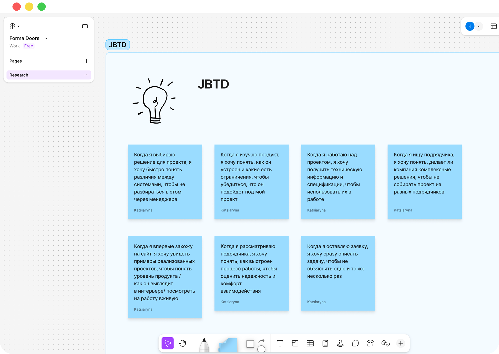

Продукт сложно объяснить только текстом
Часть технической информации нужно показывать через видео, схемы и визуальные демонстрации
FORMA Doors — производитель премиальных дверей и интерьерных систем на заказ. Работают с архитекторами, дизайнерами, девелоперами и частными клиентами, делают не просто двери, а решения под конкретные проекты
У FORMA был небольшой лендинг, который рассказывал в основном о дверях, но практически не раскрывал возможности продукта. Пользователям было сложно понять различия между системами, их устройство и применение в проектах, поэтому большая часть вопросов и коммуникации уходила менеджерам. При этом компания хотела развивать B2B-направление и продавать не отдельные двери, а комплексные решения под проекты
Информации о таких системах в открытых источниках практически не было, а сам продукт оказался технически сложным. Поэтому работу я начала с кикоффа с заказчиком и поездки на производство
Я изучила весь процесс создания дверных систем — от работы с алюминиевым профилем и сборки каркаса до установки фурнитуры и отделки материалами
Параллельно присутствовала на созвонах с клиентами и разбирала переписки и запросы из Telegram, чтобы понять, как пользователи формулируют свои задачи, что им непонятно и с какими вопросами они обращаются к менеджерам
Продукт сложно объяснить только текстом
Часть технической информации нужно показывать через видео, схемы и визуальные демонстрации
Пользователи не понимают различия между системами
Многие приходят без чёткого запроса и задают менеджерам одни и те же базовые вопросы
Сильная сторона FORMA — возможность реализовать нестандартное решение
Компания работает со сложными материалами, нестандартными размерами и проектами под конкретную задачу
После погружения в продукт я провела анализ 9+ конкурентов: изучила структуру сайтов, работу с технической информацией, проектами, архитекторами и коммерческими заказчиками
Анализ показал, что рынок в основном работает через презентацию продукта и заявку, а не через e-com. У крупных брендов системы имеют отдельные посадочные с технической информацией и спецификациями, а главная страница работает скорее как вход в бренд, чем как каталог
Дальше выделила три ключевых сегмента аудитории:
На основе анализа продукта, конкурентов и реальных коммуникаций с клиентами сформулировала JTBD

Сформировала гипотезы, которые дальше легли в структуру сайта. Основной фокус — помочь пользователю быстрее разобраться в сложном продукте и прийти к заявке с более конкретной задачей
На основе гипотез и пользовательских сценариев собрала структуру сайта и перевела её в lo-fi прототипы.
Сайт разделила на несколько уровней: знакомство с компанией и брендом, продукт и системы, реализованные проекты и дальнейшее взаимодействие с FORMA
На usability-тестах проверила, понимают ли пользователи различия между системами, находят ли нужную информацию и могут ли перейти к заявке. По результатам тестов упростила техническую подачу, изменила последовательность блоков и убрала лишнюю информацию
Когда основные сценарии были определены, перешла к визуальному направлению. Вместе с заказчиком определили, что FORMA должна восприниматься не как производитель из каталога дверей, а как премиальный архитектурный бренд
Я собрала мудборд и подготовила несколько концепций с разным подходом к сетке, контрасту и подаче контента
В результате выбрали направление с тёплым фоном, крупными изображениями и минималистичной типографикой
Отдельно проработала фото — и видеоконтент. Вместо перегруженного объяснения технических особенностей часть информации передаётся через пространство, масштаб, детали и работу самой системы. Также подготовила рекомендации для продакшена: какие рендеры, фотографии и видео потребуются для сайта
Архитекторам и дизайнерам дала быстрый доступ к системам и технической информации
Предоставила архитекторам и дизайнерам быстрый доступ к системам, технической информации, сведениям о компании и используемых материалах
Для B2B сделала акцент на процессе сотрудничества
Для up-market — на визуальной подаче и реализованных проектах. Проекты разделила на жилые, коммерческие и общественные, чтобы пользователь мог быстрее найти пример под свою задачу
Каждая система получила собственную посадочную: устройство, вариации, материалы, фурнитура, дополнительные возможности и примеры в интерьере. Сложные особенности показываются через видео и микроанимации, а техническую спецификацию можно запросить непосредственно со страницы системы
Cайт поможет разным аудиториям самостоятельно разобраться в системах, получить техническую информацию, изучить реализованные проекты и прийти к FORMA уже с более сформированным запросом